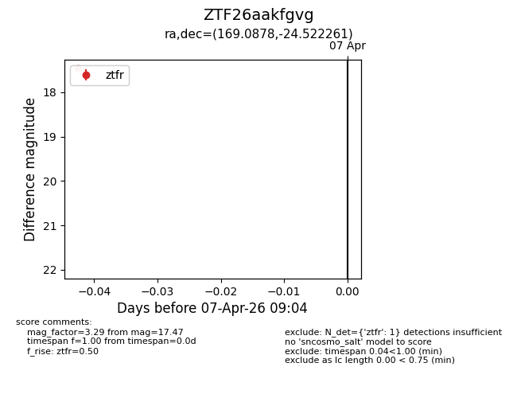
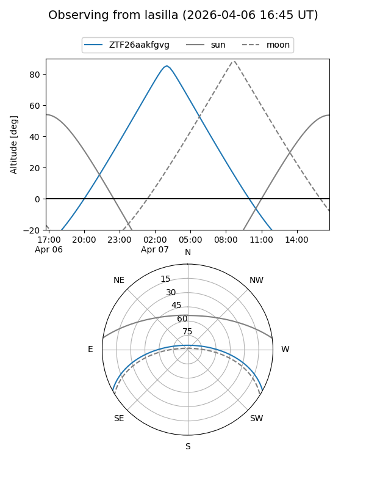
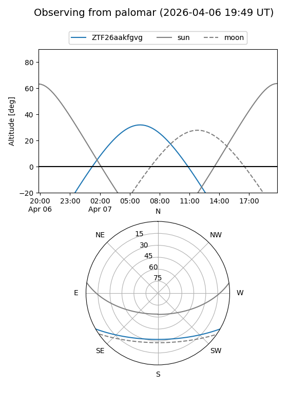

ZTF26aakfgvg
Target ZTF26aakfgvg at 2026-04-07 09:09
Aliases and brokers:
FINK: link
Lasair: link
ALeRCE: link
alt names
ZTF26aakfgvg (ztf,fink_ztf)
Coordinates:
equatorial (ra, dec) = 169.0878,-24.52226
equatorial (HMS+DMS) = 11:16:21.07,-24:31:20.14
galactic (l, b) = (276.8454,+33.48784)
Flags:
Photometry:
last ztfr=17.47
1 ztfr detections
Lightcurve

Visibility


Additional plots